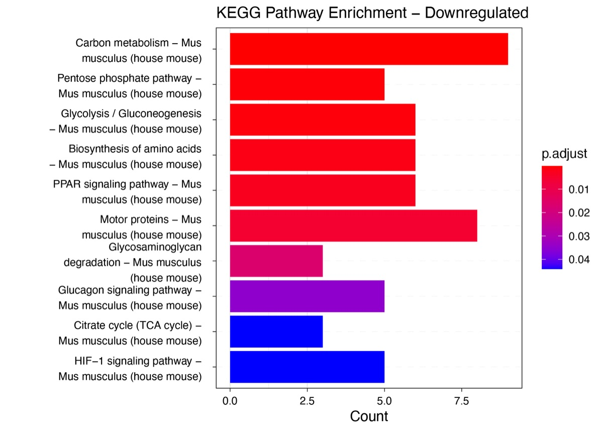
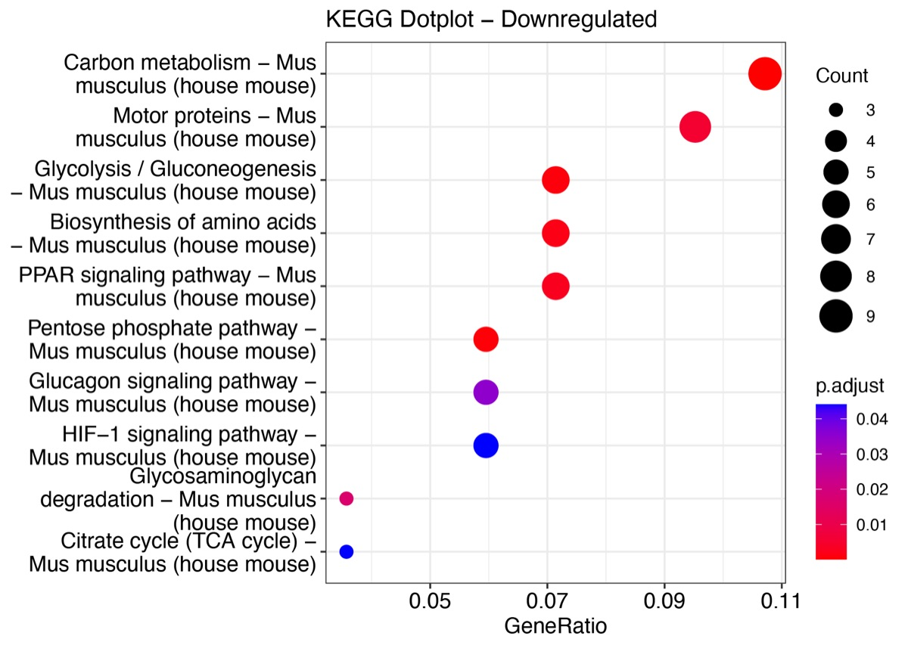
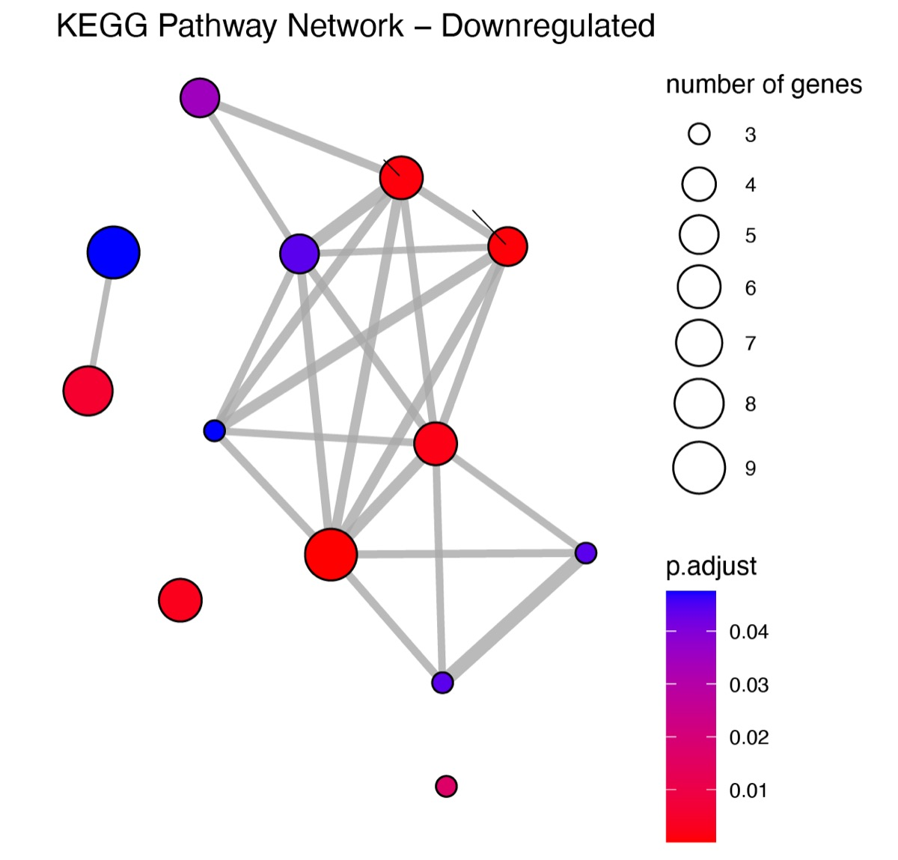

No.0042026-01-18KEGG · pathview · 通路 · 可视化
KEGG 可视化：从气泡图到通路地图
KEGG 结果不止一张气泡图：dot / network / pathview 三条路线，附 mmu01200 实测。

下调基因的 KEGG 富集总览

dot 图：把 -log10(p) 与基因数同时编码

cnet 网络版：通路与基因的归属关系一眼可见
pathview 叠加到 mmu01200 通路上，颜色即表达方向